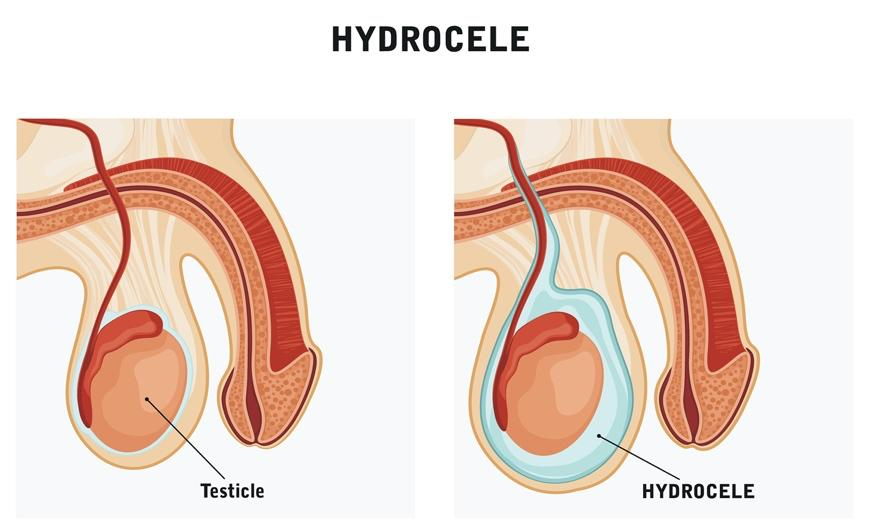

A hydrocele is a soft, painless swelling in a baby boy’s scrotum, which is the pouch of skin that holds the testicles. It happens when fluid builds up in the sac around one or both testicles.
Hydroceles are common in newborn boys. They often go away on their own in the first year of life. Hydroceles do not hurt your baby, and they do not affect how the testicles work.
It is stressful to have any health issues with a newborn baby. We understand. Your care team is here to support you in any way we can. Please let us know if there is anything you need.

Before birth, a baby’s testicles form inside the belly. They move down into the scrotum through a small tunnel. This tunnel usually closes before birth. If it does not close all the way, fluid can move into the scrotum. This fluid causes a hydrocele. A hydrocele can also form if the tunnel closes but some fluid gets trapped.
This can happen on one or both sides of the scrotum. It is not caused by anything a parent did or did not do.
Hydroceles are most common in:
Newborn baby boys
Premature babies, or babies who are born early
Most of the time, your care team can diagnose a hydrocele with a physical exam. Hydroceles usually transilluminate. This means you can shine light through them and see the light on the other side.
Your care team may order an ultrasound, a safe and painless test that uses sound waves to see inside the body. They may use it to:
Look for a testicle in the hydrocele
See whether the swelling is a hydrocele or another issue, such as a hernia or mass
Surgical treatment is not always necessary. It could be needed if:
The hydrocele does not go away after the first year of life.
The swelling gets bigger or becomes firm.
The hydrocele causes pain or discomfort.
There is a loop of bowel, also called a hernia, that moves into the same area.
Your care team will talk with you if surgery is needed.
Most hydroceles are harmless and go away without treatment. However, if the tunnel stays open, it may lead to:
An inguinal hernia, in which part of the intestine moves into the scrotum
Swelling that gets worse or becomes painful
Rarely, a hydrocele may return after surgery
To help your baby stay healthy:
Go to all well-baby checkups.
Tell your care team if you notice any changes in the scrotum, like redness, pain, or swelling that does not go away.
Ask your care team:
How can I tell if the hydrocele is getting better?
When should we come back for a checkup?
What signs mean the hydrocele needs treatment?
Will my baby need surgery?
Can I bathe or change my baby as usual?
Call your care team if your baby has:
Swelling in the scrotum, the sac under the penis, that gets bigger or smaller throughout the day, especially if it gets larger when your baby cries or strains
Swelling that does not go away or gets worse over several days
Redness or warmth of the scrotum or groin area
Discomfort or fussiness when the scrotum is touched
A scrotum that feels hard or tense instead of soft, or the swelling feels different than before
Swelling that is present on both sides of the scrotum, not just one side
Any fever of 100.4°F or 38°C or higher, when the temperature is taken rectally
Please call if you have any questions or concerns about your baby’s swelling or overall health.
Get help right away if:
Your baby has sudden, severe pain and swelling in the scrotum or groin area.
The scrotum becomes very red, hot, or tender to touch.
The swelling is firm and does not go away, especially if your baby is also vomiting or seems very sick.
Your baby is very fussy, hard to wake up, or unusually sleepy.
The scrotum becomes blue, purple, or very dark in color.
Your baby has no urine for 6 hours or more, or signs of severe dehydration, such as dry mouth, no tears when crying, or a sunken soft spot on the head.
A hydrocele is usually not dangerous and often goes away on its own. However, sudden changes or pain can be a sign of a more serious problem, like a hernia or twisted testicle, that needs emergency care.
Thank you for trusting us with your child’s care. We are here to support you and want you and your child to feel your best. Contact us with any questions.
IF YOU HAVE A MEDICAL EMERGENCY, CALL 911 OR GO TO THE EMERGENCY ROOM.
The information presented is intended for general information and educational purposes. It is not intended to replace the advice of your health care provider. Contact your health care provider if you believe you have a health problem.
Last updated May 2025
© 2025 Mytonomy, Inc. All rights reserved.